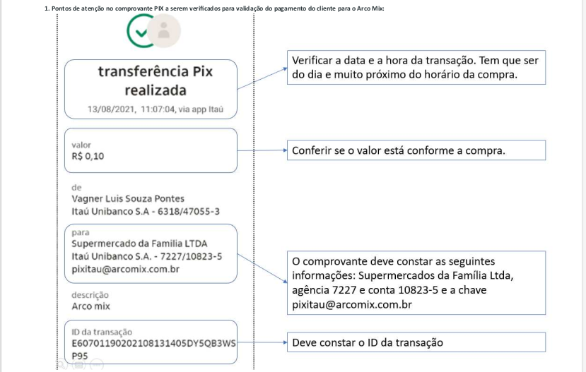

TUTORIAIS, DICAS, PROCEDIMENTOS, NÃO IMPORTA COMO VOCÊ CHAMA, AQUI VOCÊ APRENDE.
Tabelas de erro do SITEF
| Código | Mensagem apresentada no PDV | Descrição |
|---|---|---|
| 0 | Transção OK | Aprovada, Transação executada |
| 03 | Estabelecimento inválido | Estabelecimento comercial inválido |
| 06 | Refaça a transação | Erro |
| 12 | Transação inválida | Transação inválida |
| 13 | Valor inválido | Valor da transação inválido |
| 14 | Problema no cartão | Cartão inválido |
| 15 | Problema no cartão | Instituição não cadastrada |
| 19 | Refaça a transação | Refaça a transação |
| 20 | Refaça a transação | Resposta inválida |
| 25 | Refaça a transação | Registro não encontrado |
| 30 | Refaça a transação | Erro de formato |
| 31 | Problema no cartão | Instituição não pertence a rede |
| 38 | Problema no cartão | Excedido números de tentativas do pin |
| 39 | Conta inválida | Número de conta inválida |
| 41 | Problema no cartão | Cartão de extravio |
| 43 | Problema no cartão | Cartão roubado |
| 51 | Excede limite | Saldo insuficiente |
| 52 | Problema no cartão | Conta corrente não cadastrada |
| 54 | Problema no cartão | Não autorizada, cartão vencido |
| 55 | Senha inválida | Senha incorreta |
| 56 | Problema no cartão | Cartão sem registro |
| 57 | Problema no cartão | Transação não permitida a este cliente |
| 59 | Conta inválida | Conta irregular |
| 60 | Ligue Cartão | Entrar em contato com a instituição |
| 61 | Excede limite | Excedido o limite de saque |
| 65 | Excede limite | Excedido frequência de saque |
| 76 | Problema no cartão | Cartão bloqueado |
| 79 | Problema no banco | Transação não permitida nesse ciclo |
| 83 | Refaça transação | Time-out |
| 84 | Refaça transação | Log-on(terminal não aberto) |
| 85 | Refaça transação | Problema de rede local |
| 87 | Falta cartão | Cartão obrigatório na transação |
| 91 | Refaça transação | Instituição temporariamente fora de operação |
| M7 | IPTE inválido | Códido IPTE inválido |
| M9 | Refaça transação | Data inválida |
Procedimentos de transações PIX com anomalias nos feriados e finais de semana
O Arco Mix está apto a receber pagamentos via PIX, 24 horas por dia e os 07 dias da semana. O pix no PDV funciona com QrCode no monitor e no Delivery/e-Commerce funciona através do comparMlhamento da chave pix. Este processo já está funcionando normalmente no PDV e Delivery/e-Commerce.
Abaixo descrevo os procedimentos a serem executados, somente, nos casos específicos descritos nos itens 1 e 2 em transações via PIX nas lojas, em especial, nos finais de semanas e feriados.
1. PIX PDV – procedimento a ser executado em casos de instabilidade do sistema nacional financeiro:
a. Se a compra não foi autorizada no PDV, mas debitou do cliente;
b. A operadora deverá chamar a fiscal para confirmar se o débito ocorreu na conta do cliente, solicitando ao mesmo que verifique através do aplicaMvo do banco oucarteira digital;
c. Se confirmado o débito na conta do cliente: a fiscal deverá solicitar ao cliente que faça um segundo acesso no aplicaMvo, após 3 minutos, para confirmar se o débito ainda existe em sua conta;
d. Solicitar ao cliente que envie o comprovante para o celular da loja;
e. Após conferência da fiscal e confirmação do débito ainda presente na conta do cliente: pode ser registrada a compra na forma de pagamento POS para finalizar a venda e liberar o cliente;
f. Deverá ser enviado ao financeiro o comprovante do débito do cliente e uma CI, ambas assinadas pela fiscal, informando que foi uma venda no PIX e que ocorreu instabilidade do sistema.
2. PIX chave Itaú (Delivery/e-Commerce)
a. Passar a seguinte chave PIX para o cliente: pixitau@arcomix.com.br
b. Aos sábados, domingos e feriados:
i. Após a efetivação do PIX pelo cliente: solicitar o envio do comprovante do débito na conta do cliente para o celular do Delivery/e-Commerce;
ii. Após confirmação da equipe delivery/e-Commerce do débito na conta do cliente: registrar a compra na forma de pagamento POS;
c. De segunda a quinta até as 17:30 e na sexta-feira até as 16:30:
i. Após a efeMvação do PIX pelo cliente: solicitar confirmação do depósito ao departamento financeiro;
ii. Após confirmação do crédito pelo departamento financeiro: registrar a compra na forma de pagamento POS;
d. Deverá ser enviado ao financeiro o comprovante do débito do cliente e uma CI, ambas assinadas pela encarregada do Delivery/e-Commerce, informando que foi uma venda no PIX;
IMPORTANTE: No caso do cliente, errar o valor e fazer um PIX com valor maior que a compra: deverá chamar o responsável pela loja, informar o fato ocorrido, e em seguida receber o valor total que foi depositado via PIX, registrando a compra na forma de pagamento POS e a diferença ser utilizado a forma de TROCO. Enviar CI assinado pelo responsável pela loja (gerente/encarregado) detalhando o motivo do troco. Se o cliente errar e transferir um valor menor que a compra, o mesmo deverá realizar um novo PIX ou escolher uma nova forma de pagamento até completar o total da compra.

Consultar e-mail enviado
Orientações passadas por Vagner Pontes | Coordenador Financeiro e Controladoria.